Components of Workspaces
In this chapter, we’ll delve into the various elements that constitute Workspaces within OneStream. This chapter provides a comprehensive overview of maintenance units, dashboard groups, Cube View groups, data management groups, and other essential components that enhance the functionality and efficiency of OneStream applications. Users can achieve refined workflows and streamlined processes by organizing and developing solutions through these components. By the end of this chapter, you’ll be equipped with the knowledge to leverage these components effectively, thereby optimizing Workspace solutions for better performance and usability.
Components of Workspaces
Maintenance Units
Maintenance Units are groups of dashboards and related components that make up solutions in OneStream. When you load solutions from the Solution Exchange, the file contains the building blocks of a maintenance unit, which makes organizing and developing solutions more cohesive.
While Workspaces increase development efficiency, maintenance units allow for further refinement and the separation of unique workstreams to provide another tool in taking your OneStream application to the next level.
The example below shows a Workspace with four maintenance units that contains dashboard solutions used in workflow steps.
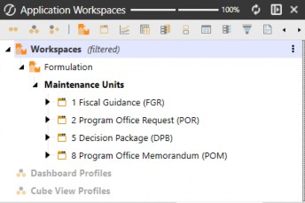
Figure 4.1
Components of Workspaces
Dashboard Groups
Dashboards can be built and grouped by functionality or any method you prefer. In the example below, we’ve built a solution named Decision Package, which comprises multiple dashboard tabs and dialogs that are organized by tab and a OnePlace (DPB) group. The top-level dashboard is made available from OnePlace by attaching the dashboard group to a dashboard profile.
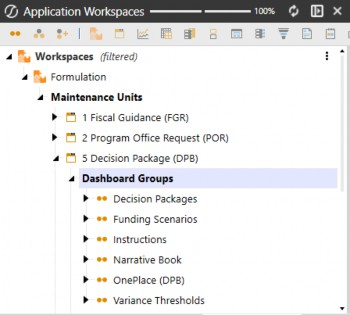
Figure 4.2
Components of Workspaces
Cube View Groups
Cube Views are used for reporting, analysis, and data entry. You can create Cube Views on the Cube Views page under the Application tab, or you can create them within Workspaces to truly organize and group fully packaged Workspace solutions that can be packaged for deployment.
Additional Cube Views created outside of the Default Workspaces – within other Workspaces – cannot be accessed from the Cube View page.
Cube Views can be found in three areas within the Workspace menu:
From the
DefaultWorkspace, under theDefaultmaintenance unit. Here is where you will find all legacy Cube Views.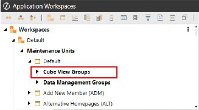
Figure 4.3
From the
DefaultWorkspace, under the specified maintenance unit. When modifying or building out maintenance units within theDefaultWorkspace, you now have the ability to create Cube Views packaged within the respective maintenance unit.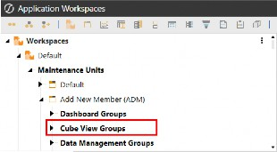
Figure 4.4
From non-default Workspaces, under the specified maintenance unit. When creating new Workspaces for development, building Cube Views within the Workspace allows you to export the application Workspace without the need to export a separate file for the Cube Views.
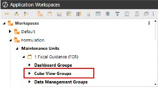
Figure 4.5
Components of Workspaces
Data Management Groups
Data management objects are used to automate and organize tasks in OneStream – like loading data, running calculations, or triggering business rules. These objects work together to form structured process flows that execute in a specific order. You can create data management objects on the Data Management page under the Application tab, or you can create them within Workspaces to truly organize and group fully packaged Workspace solutions that can be packaged for deployment.
Data management objects can be found in three areas within the Workspace menu:
From the
DefaultWorkspace, under the default maintenance unit. Here is where you will find all legacy data management objects.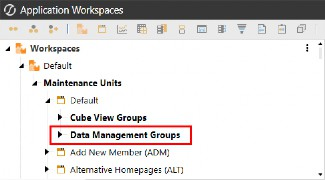
Figure 4.6
From the
DefaultWorkspace, under the specified maintenance unit. When modifying or building out maintenance units within theDefaultWorkspace, you now have the ability to create data management objects packaged within the respective maintenance unit.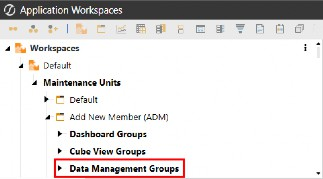
Figure 4.7
From non-default Workspaces, under the specified maintenance unit. When creating new Workspaces for development, building data management jobs within the Workspace allows you to export the application Workspace without the need to export a separate file for the data management objects.
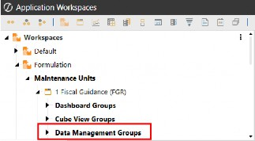
Figure 4.8
Components of Workspaces › Data Management Groups
Steps
Steps are the building blocks for creating and adding new processes that can be combined within sequences to run a single action that triggers all steps assigned to the sequence.
Click
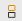
from the Workspace toolbar to create a new data management sequence.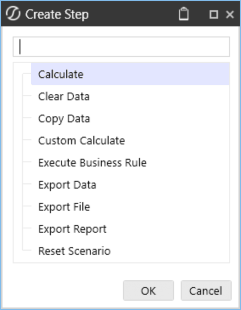
Figure 4.9
Below is an example of a custom calculate data management step using a business rule function to trigger an action following the processing of a sequence (and its steps).
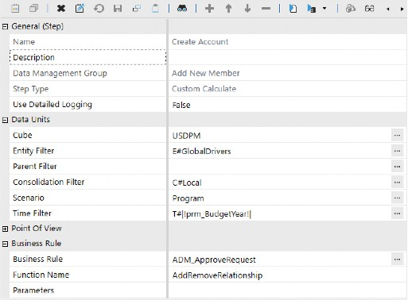
Figure 4.10
Components of Workspaces › Data Management Groups
Sequences
A sequence is an ordered series of one or more data management steps that will execute in the order in which the steps are organized. The sequence name is used to trigger actions when calling business rules from dashboard components such as buttons.
Click from the Workspace toolbar to create a new data management sequence. Next, click on the Sequence Steps tab and the button to add steps to your sequence.
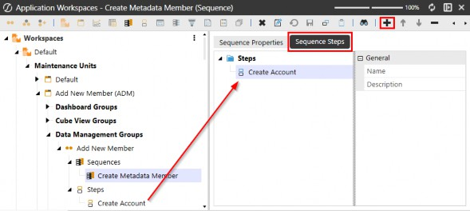
Figure 4.11
Components of Workspaces
Data Adapters
These objects are attached to various dashboard components to provide a live connection from the database tables to the dashboard, allowing users to interact with the data.
Data adapters are objects used to supply various dashboard components with data. They use the following available methods:
Cube View – This command type allows for a preconfigured Cube View to be
the data source for a dashboard, and is the primary data source for most components.
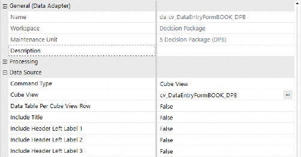
Figure 4.12
Cube View MD – This command type will return the selected Cube View as a multidimensional fact table that simplifies report building using BI Viewer components.
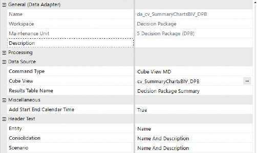
Figure 4.13
Method – Use the Business Rule option when creating a custom rule to incorporate within a Method query. Upon selecting this method type, the data adapter will display various out-of-the-box queries that can be used in addition to any custom business rule logic.
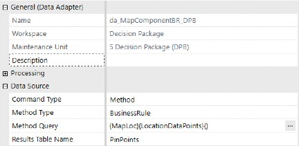
Figure 4.14
SQL – Queries against the application or framework database can be written as a data source.
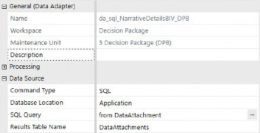
Figure 4.15
BI-Blend – The purpose of the BI Blend adapter is to provide dashboard designers with a predefined interface for querying BI Blend tables.
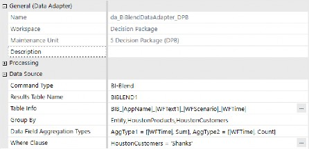
Figure 4.16
Components of Workspaces
Parameters
Parameters allow you to make dashboards and reports dynamic and reusable by creating lists of metadata members, values, selections, and literal values you want to remain static. The use of parameters is highly recommended to reduce report duplication and streamline data quality.
Listed below are the parameter types available in OneStream:
Literal Value – Explicit value that can be updated with dashboard actions via business rules or Assemblies.
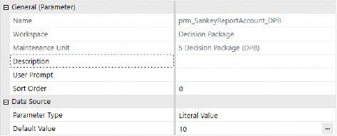
Figure 4.17
Input Value – Holding parameter that dashboard actions pass values into for use in business rules or Assemblies.
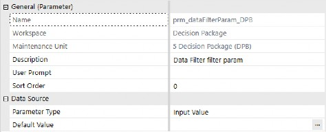
Figure 4.18
Delimited List – Manually list out items to be available from a selection component.
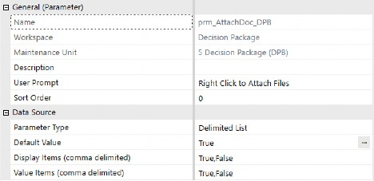
Figure 4.19
Bound List – Create lists of various application members and properties by using different Method Types.
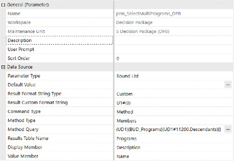
Figure 4.20
Member List – Uses Member Filter Builder to create a list of metadata members.
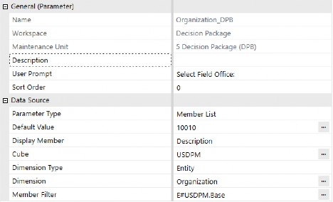
Figure 4.21
Member Dialog – Metadata member list that is used in the member tree component or in a button that exposes the member tree structure.
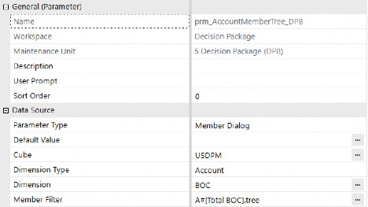
Figure 4.22
Components of Workspaces
Components
OneStream currently has 38 Component Types. In the following section, we’ll explain the various components and provide examples of what they look like.
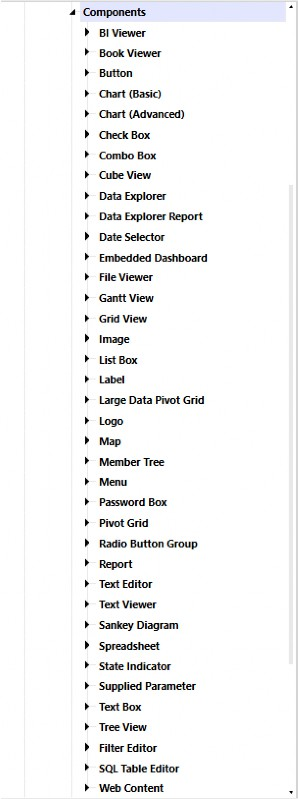
Figure 4.23
Components of Workspaces › Components
Data & Visualization Components
Components of Workspaces › Components › Data & Visualization Components
BI Viewer
The interactive presentation engine enables users to rapidly build Business Intelligence (BI) visualizations using data from existing or newly created data adapters. It provides a streamlined way to create BI dashboards that support rich data analysis and visualization.
These dashboards are highly dynamic and empower users to build components such as charts, gauges, maps, grids, and cards. The BI component integrates seamlessly with the Cube View MD data adapter and offers robust design-time capabilities, including:
Adding calculated fields and custom measures
Defining drill-down paths
Enabling multi-select filters
Applying conditional formatting for runtime interactivity
Customizing color palettes for a tailored visual experience
The BI Viewer component in the figure below retrieves data from a Cube View MD data adapter.
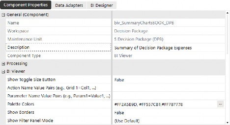
Figure 4.24
Components of Workspaces › Components › Data & Visualization Components › BI Viewer
Component Display
The Cube View supplying the data adapter is made up of years in the columns and accounts in the rows, making this a quick and simple visualization to create, based on dashboard parameters.
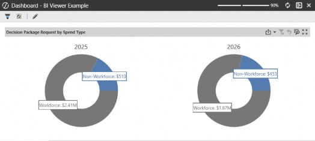
Figure 4.25
Components of Workspaces › Components › Data & Visualization Components
Book Viewer
Displays a bound report book (.pdf, Word, Excel) inside the dashboard. Books are created in OneStream from the Application → Books menu.
Books can be saved as the following file location types:
Workspace file
Application Database file
System Database file
File Share file
In the Component property, you are able to enter a description that displays in the header, specify the book location, select the book, and modify display settings when the component is displayed on a dashboard.
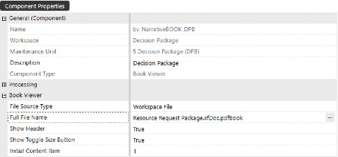
Figure 4.26
Components of Workspaces › Components › Data & Visualization Components › Book Viewer
Component Display
This component allows you to view book sections individually, or check the box to Combine All Items, effectively merging the book content that can be exported as a PDF.
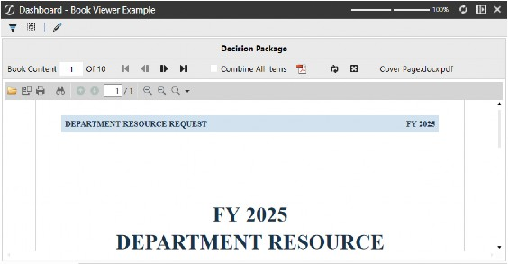
| Also from OneStream Press, the second edition of the OneStream Foundation Handbook. |
Figure 4.27
Components of Workspaces › Components › Data & Visualization Components
Chart (Basic)
Simple chart types (bar, line, pie, etc.) for quick data visualization.
In the Component property, you can enter a description to display in the header, pick the Chart Type, modify basic X-axis and Y-axis settings, and select the Data Series Source Type.
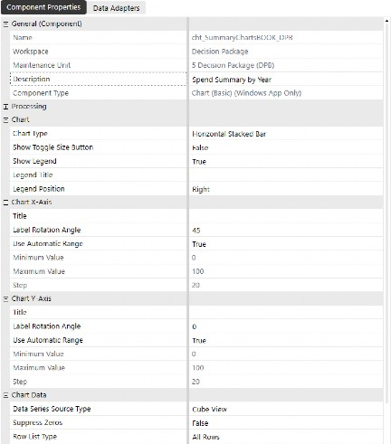
Figure 4.28
Components of Workspaces › Components › Data & Visualization Components › Chart (Basic)
Component Display
The basic chart component provides limited control over display formatting – compared to advanced charts – but is a quick and easy visualization to create in a pinch.
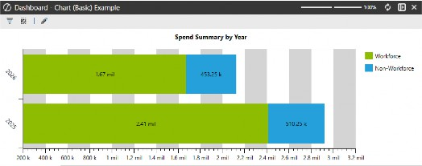
Figure 4.29
Components of Workspaces › Components › Data & Visualization Components
Chart (Advanced)
Advanced charts provide significantly more flexibility with formatting and interactive behavior that can be configured. In the figures below, we’ve configured the chart to display a side-by-side stacked bar chart to provide a visual representation of Workforce vs Non-workforce spend contribution by year. The chart explains how a multi-year funding request is allocated by spend category in an easy-to-understand visual.
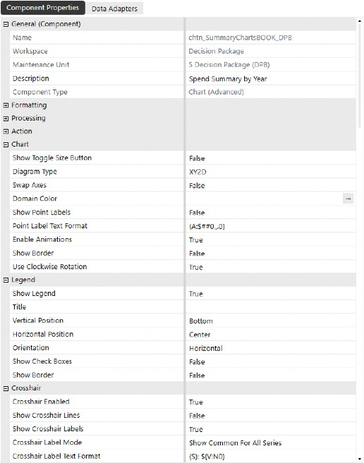
Figure 4.30
In the Chart Data section of the advanced chart properties, the Data Series Source Type should be selected based on the data adapter that supplies the component with its relevant data. The default setting is Cube View, but you can change this to Business Rule from the drop-down menu when configuring the component. For heavy customization, developers may prefer to use business rules to fine-tune chart formatting.
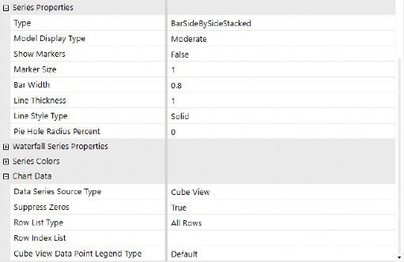
Figure 4.31
To use a business rule, simply change the Data Series Source Type to Business Rule and attach a data adapter with a Method command type and BusinessRule method type. Here is an example of a Dashboard Data Set business rule:
If args.DataSetName.XFEqualsIgnoreCase("WaterFallFormat") Then
Dim dataAdapter As String = args.NameValuePairs.XFGetValue("DataAdapter") Dim dataRows As New XFSeriesCollection()
dataRows.FillUsingCubeViewDataAdapter(si,False,String.Empty,dataAdapter,xfdatarowlisttype.Allrow s, String.Empty,xfChartCubeViewDataPointLegendType.Default,False, XFChart2seriesType.BarRangeSideBySideWaterfall,args.CustomSubstVars)
For Each dataRow As XFSeries In dataRows.Series dataRow.ModelType = XFChart2ModelType.BarRange2DTransparent dataRow.BarWidth = .90
dataRow.Transparency = .7
For Each dataPoint As XFSeriesPoint In dataRow.Points If dataPoint.Value > 0 Then dataPoint.Color = "Green" 'If this datapoint is an increase, paint it green
Else
dataPoint.Color = "Red" 'If this datapoint is a decrease, paint it red
End If Next
dataRow.Points(0).Color = "OSLightGray"'Paint the first bar OSLightGray dataRow.Points(dataRow.Points.Count-1).Color = "OSDarkGray" 'Paint the last bar OSDarkGray
Next
Return dataRows.CreateDataSet(si) End If
Components of Workspaces › Components › Data & Visualization Components › Chart (Advanced)
Component Display
The appearance of advanced charts is vastly improved compared to basic charts. Their dynamic components give you the tools to really take advantage of additional formatting, as well as trigger actions to open or refresh other dashboards – with a simple click – on any area within the chart.
Within the component’s property, you can configure these charts to run business rules, open dialogs, or navigate within the application, based on the bound parameter and server tasks or user interface actions, located under the Actions section.
Formatting the chart’s colors, legend, crosshairs, as well as X and Y axis display settings, are available with this component, making this chart much more visually and interactively appealing than the basic chart component.
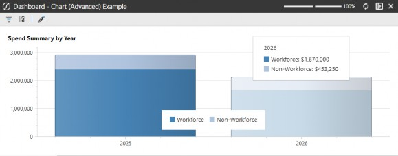
Figure 4.32
Components of Workspaces › Components › Data & Visualization Components
Cube View
Displays multidimensional data from the cube in grid format, which can be used for input or reporting. It’s important to note that Cube View components differ from Cube Views themselves; Cube View components are objects placed on dashboards that display a Cube View – with the ability to control what should happen when a user interacts with the Cube View (refresh a different part of the dashboard, for example).
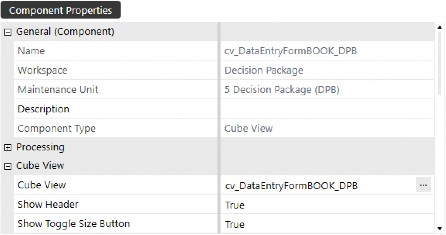
Figure 4.33
Components of Workspaces › Components › Data & Visualization Components › Cube View
Component Display
Cube View components display identically to the same processed Cube View in the user interface. This component serves as a method by which Cube Views are displayed on dashboards, whether for reporting or data entry.
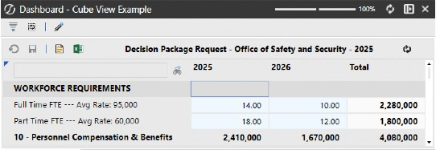
Figure 4.34
Components of Workspaces › Components › Data & Visualization Components
Data Explorer
This component is another method of displaying a Cube View in the standard Data Explorer view, when you click Open Data Explorer from the Cube View item itself. To use this component, enter a name and attach a Cube View Method Data Adapter to the component’s Data Adapters tab.
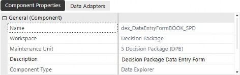
Figure 4.35
Components of Workspaces › Components › Data & Visualization Components › Data Explorer
Component Display
The Data Explorer component’s display is the same as the Cube View component. However, you do not have the ability to hide the header or remove certain buttons from the header toolbar.
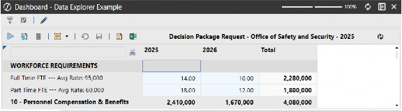
Figure 4.36
Components of Workspaces › Components › Data & Visualization Components
Data Explorer Report
A static version of a Data Explorer result for viewing or exporting (PDF, Excel, etc.).
This component’s display mirrors the Report View of a processed Cube View. To use this component, enter a name and attach a Cube View Method Data Adapter to the component’s Data Adapters tab.
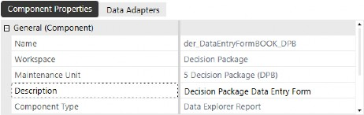
Figure 4.37
Components of Workspaces › Components › Data & Visualization Components › Data Explorer Report
Component Display
The Data Explorer Report component’s display is identical to what you see when viewing a processed Cube View report. This component is especially useful when enabling navigation links from Cube View rows that have been configured to open other dashboards in dialog boxes.
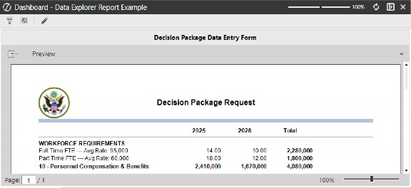
Figure 4.38
Components of Workspaces › Components › Data & Visualization Components
Gantt View
For visualizing tasks, events, or project timelines, a Gantt view is great for planning and project dashboards!
A Gantt View is best known for its use in Task Manager. This component displays a timeline visualization for a given process, project, or set of tasks, which helps your users quickly understand the status of groups of items.
Another added benefit of this component is the ability to trigger actions based on item selection, making it incredibly interactive and actionable, based on the visual indicators.
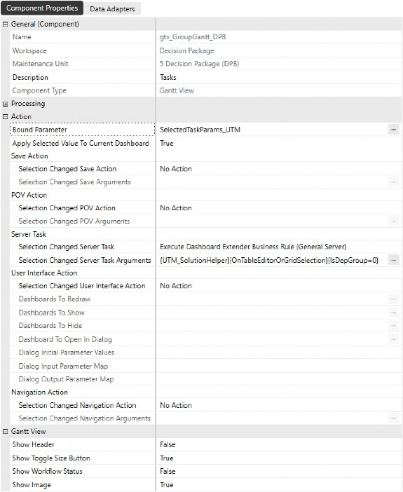
Figure 4.39
Components of Workspaces › Components › Data & Visualization Components › Gantt View
Component Display
Below is a sample set of tasks from Task Manager, with a Gantt View that shows the steps to be completed to close the books for a given period. The orange image indicator means that the task has a dependency, meaning that the preceding tasks must be completed before Load Trial Balance can be completed.
You can easily see the start and end dates for any task, whether by viewing the columns or viewing the timeline on the right of the tasks. The Details column surfaces buttons that can launch navigation or expose additional information about the task.
This is just an example of how Gantt Views can be used to enhance the user experience. Now, imagine how project or resource planning (or any other planning process) could be visually displayed to enable users to act faster and more efficiently, with the ability to realize bottlenecks or delays.
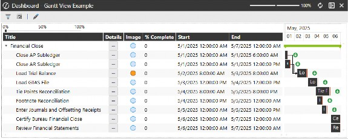
Figure 4.40
Components of Workspaces › Components › Data & Visualization Components
Grid View
A tabular display of data from SQL or cube queries. Good for listing or editing records.
Grid views are blank canvases for displaying data from various sources – all based on the data adapter attached to the component. In the figure below, a SQL Command Type data adapter has been created that queries the DataAttachment application database table to source the component with text entered into various annotation view members. In the grid view’s properties, formatting options allow you to make columns multi-line text in order to apply word-wrap and fit within the column’s width setting.
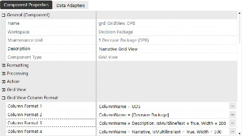
Figure 4.41
Components of Workspaces › Components › Data & Visualization Components › Grid View
Component Display
Grid views are a great way to display cube data, relational data, or a combination of both, depending on how you configure the data adapter that sources the data and other information. They perform best with datasets up to a few thousand records, ensuring a smooth and responsive user experience.
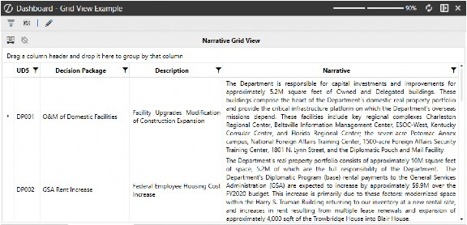
Figure 4.42
Components of Workspaces › Components › Data & Visualization Components
Large Data Pivot Grid
Optimized for high-volume cube data with pivoting, sorting, and filtering. Think “power-user” view.
When working with large data sets, you may need to analyze data that may not be within the OneStream application due to performance or data modification requirements. To address this, the Large Data Pivot Grid component allows you to query tables directly that you can sort, organize, and analyze – even on data that is not actually in the application. Thanks to Pagination, this component can be responsive and performant even on datasets with millions of records.
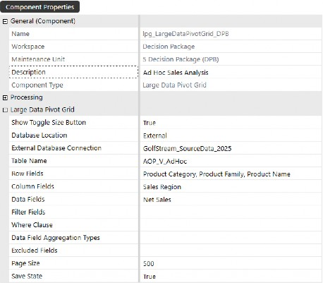
Figure 4.43
Components of Workspaces › Components › Data & Visualization Components › Large Data Pivot Grid
Component Display
This component displays external data from the server connection string, empowering users to analyze and act on data at a more granular level than what has been loaded to the cube.
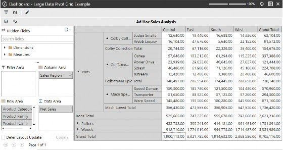
Figure 4.44
Components of Workspaces › Components › Data & Visualization Components
Map
A geo-visualization tool for data displayed on maps (region-based KPIs, etc.).
Using the map component requires no data adapters or coding out-of-the-box. You can, however, customize the map and interactivity with the use of data set business rules.
Display Type – Humanitarian, Standard, and Transport map display types are available.
Zoom Level – The distance at which you want to view the map. A lower zoom level will display a broader view of the area, while a higher zoom level will show a closer view.
Center Latitude & Longitude – These coordinates determine the central location of the map.
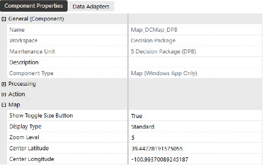
Figure 4.45
Components of Workspaces › Components › Data & Visualization Components › Map
Component Display
This component can be configured to pass in parameters based on map points, allowing you to navigate to region/location-specific data based on coordinates that are assigned to a metadata member’s text properties, simply by clicking on the map point.
To enable this functionality, you would use a data set business rule and attach it to a data adapter that displays points on the map. Once the data adapter is configured and attached to the component, you can assign a bound parameter to the map component and configure the server task settings to refresh the page with member-filtered data when a user clicks on a point on the map.
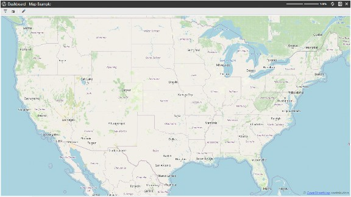
Figure 4.46
Components of Workspaces › Components › Data & Visualization Components
Pivot Grid
An interactive grid for analyzing cube data – pivot fields, sort, filter, drill. Unlike the Large Data Pivot Grid, this component is powered by a standard data adapter – you can source data from Cube Views or business rules. However, it is not intended for displaying datasets containing hundreds of millions of records.
Below is an example of the data adapter querying the People Planning Register table. You can refine the SQL query to limit the fields users can view, and add a WHERE clause to filter the table’s records.
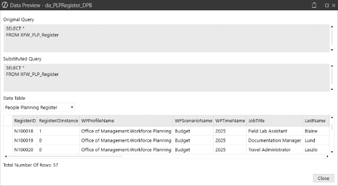
Figure 4.47
In the Component Properties, you can set the default Column, Row, and Data Fields.
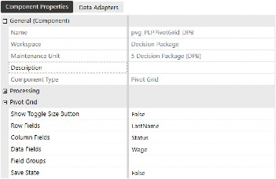
Figure 4.48
Components of Workspaces › Components › Data & Visualization Components › Pivot Grid
Component Display
When the component is initially displayed, default settings are applied. However, by nature of the component, the user can easily change the view, add additional nesting in rows or columns, and essentially slice the data – in whatever way they need to – when analyzing the data.
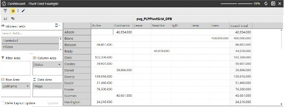
Figure 4.49
Components of Workspaces › Components › Data & Visualization Components
Report
Displays formatted, printable reports that can be displayed on dashboards or even incorporated into Books. Within the Report Designer, you can place and format fields, create reports that loop through data members, and insert a Table of Contents.
Figure 4.50
Components of Workspaces › Components › Data & Visualization Components › Report
Component Display
The figure below is one of the many reports included in the out-of-the-box People Planning solution from the Solution Exchange.
Designing these reports from scratch can be an intimidating task. The way I learned how to make and modify them is by copying an existing report and making minor changes, then previewing the report from the Report Designer. Once you grasp how these report outputs are constructed, you’ll better understand how you can use these reports to loop through large data sets and create lengthy books rather than duplicate the same report.
Figure 4.51
Components of Workspaces › Components › Data & Visualization Components
Sankey Diagram
A flow diagram showing how values split and merge, a Sankey diagram is great for cost allocations and data movement.
This component requires a BusinessRule data adapter to create datasets on the fly. The Sankey diagram shows the flow of data from one dimension to another, as well as tiered flows, based on how the code is written.
Figure 4.52
Components of Workspaces › Components › Data & Visualization Components › Sankey Diagram
Component Display
The component displays the flow, based on how the business rule has been coded. This is a simple example showing how values from entities on the left contribute to programs on the right. You’re able to pass parameters through the component to provide the ability to click on a specific flow stream and display additional detail or expose other navigation features.
Figure 4.53
Components of Workspaces › Components › Data & Visualization Components
Spreadsheet
An embedded Excel-like spreadsheet interface where users can work with familiar Excel tools inside OneStream. To use this component, you’ll need to either upload an Excel file into OneStream or open the Spreadsheet tool under Applications and save the file into one of the folder structures.
Figure 4.54
Components of Workspaces › Components › Data & Visualization Components › Spreadsheet
Component Display
In this example, the source Excel file we inserted into the component has a Cube View connection, which displays the contents and layout of the Cube View in Excel. Spreadsheets can also use table views to display raw tables that provide more reporting capabilities. To do this, you’ll need to create a Spreadsheet business rule that can be called and inserted into the Spreadsheet from the OneStream ribbon.
Figure 4.55
Components of Workspaces › Components › Navigation & Input Components
Button
Executes actions, opens dashboards, runs business rules, refreshes data, etc.
Buttons are commonly used on dashboards to allow users to interact with the software. All Solution Exchange solutions contain buttons in some fashion, and I encourage you to dissect the different buttons within these solutions to understand what they are doing and how they are configured.
Listed below are the highlights of button functionality:
Save – Saves data that has been changed on a dashboard
Refresh – Refreshes dashboards after data has been changed
Execute Actions – Runs calculations, business rules, and data management jobs
Navigation – Navigates to workflows, dashboards, files, webpages, or application pages (based on user security)
Change POV – Changes the Cube POV, workflow, or both
Open Dialogs – Opens dialog boxes with instructions, other information, etc.
In the figure below, the button has been formatted with a label and tool tip, and the button itself is configured to execute a dashboard extender business rule, which sends a dashboard report to email recipients defined by security groups.
Figure 4.56
Components of Workspaces › Components › Navigation & Input Components › Button
Component Display
When you hover over the button, you can easily see the tool tip as configured in the button properties. This is especially helpful when you want to display buttons without text, and you can enter instructions, descriptions (or whatever you want) in the tool tips field to help users navigate dashboards.
Figure 4.57
Components of Workspaces › Components › Navigation & Input Components
Check Box
Allows binary user input (on/off, true/false).
We primarily see the use of this component in Solution Exchange solutions, typically on the administrative setup or management dashboards that control solution settings.
Figure 4.58
Components of Workspaces › Components › Navigation & Input Components › Check Box
Component Display
This component’s bound parameter is a delimited list parameter type with true/false options. When the box is checked, you could trigger an action to open a dialog where the user would attach a document to the file path dictated in the component’s properties.
This component would typically be used in conjunction with a button to save the selections and run any necessary steps (such as saving the selection or executing an action based on the selection).
Figure 4.59
Components of Workspaces › Components › Navigation & Input Components
Combo Box
A drop-down list to select a single item for binding to dimensions, parameters, or hardcoded lists.
These components, in the simplest use case, should be set up to refresh a dashboard or dashboards. That way, the selection refreshes the dashboard automatically to display data that is relevant to the combo box selection. You have the same functionality available in button components; you can change POV, navigate to other dashboards, or execute actions.
Some of the newer features of combo box components are the Display Format settings:
IsMultiSelect – useful when displaying components with multiple selected items
ShowSearch – useful when you have lengthy lists of options from a parameter
Figure 4.60
Components of Workspaces › Components › Navigation & Input Components › Combo Box
Component Display
The combo box in the figure below shows how this component is displayed on a dashboard. This is just an example of a combo box we’ve built, and you can certainly change the appearance of the combo box by modifying the component’s Display Format properties.
Figure 4.61
Components of Workspaces › Components › Navigation & Input Components
Date Selector
A calendar-style picker for date inputs; data selectors can drive time parameters.
Date selectors can be used in various ways, whether that’s collecting attributes about a project plan or querying the OneStream database tables to view audit reports within a specified date range. This component requires no business rules or coding, and you can set Min and Max Dates to guide your users to applicable date ranges when populating this component on a dashboard.
Figure 4.62
Components of Workspaces › Components › Navigation & Input Components › Date Selector
Component Display
When placed on a dashboard, users have the ability to key in the date, or select a specific date by clicking on the calendar icon within the box. This component is used widely throughout the Application Reports solution from the Solution Exchange, specifically in the audit reports, where the reports query the database tables for date ranges.
Suppose you want to plan long-term project profitability. You could use this component to capture the start and completion dates to get a timespan, and the timespan could then be used in calculations to forecast allocated costs by period, factoring in partial months up to the proportion of days in the start and completion date.
Figure 4.63
Components of Workspaces › Components › Navigation & Input Components
Embedded Dashboard
Embedded dashboard components are automatically created when you create dashboards for the purpose of nesting dashboard objects. These components are also the mechanism for reusing dashboards from other Workspaces or maintenance units.
In the example below, we’ve created a new embedded dashboard component that we will use to pull a dashboard from another Workspace. The native dashboards shown below are components that were automatically created when we added actual dashboards to our dashboard groups, while the added component is the item we created.
When adding embedded dashboards to a tab layout-style dashboard, the tab label defaults to the name of the embedded dashboard. For example, if you attach the first two embedded dashboard components shown below, the first tab would display emb WorkflowButtons_DPB and the second would display Embedded 0_Frame_DPB. To present more user-friendly tab names, you can set the Description property of each embedded dashboard – helping users quickly understand what each tab contains.
Added Component
Native Dashboards
Figure 4.64
Components of Workspaces › Components › Navigation & Input Components › Embedded Dashboard
Component Display
Dashboards are a collection of objects laid out in a user-defined layout. In the figure below, you can see that two embedded dashboard components have been added to the 00_db_Dpack_Management_DPB dashboard.
Figure 4.65
Components of Workspaces › Components › Navigation & Input Components
Filter Editor
Enables users to build and modify filters dynamically; often tied to Cube Views or reports.
Figure 4.66
Components of Workspaces › Components › Navigation & Input Components › Filter Editor
Component Display
This component is used to allow users to filter data from another component, such as a grid view component (shown below, for example), which can be filtered using multiple conditions. To the right of the filter component, the filter query is displayed to show the user any applied filters.
Figure 4.67
Components of Workspaces › Components › Navigation & Input Components
List Box
Displays a scrollable list, single or multi-selection.
The list box component shown below uses a bound parameter based on a Method Command Type parameter, and you can enable the multi-select feature from the component’s Display Format properties.
Figure 4.68
The parameter used to supply the list box component is shown below. In the method query, our dimension type, name, and filter are defined.
Figure 4.69
Components of Workspaces › Components › Navigation & Input Components › List Box
Component Display
When the component is placed on a dashboard, we see the query results from the parameter, as well as check boxes on each list row to allow selection. This component could be used on a dashboard to allow users to pick multiple members that would populate a Cube View or any other component to display data, based on the selections made from the list box component. The dashboard that is refreshed – based on the list box selection – could either be automatically refreshed each time the list box selections are changed, or you could use a button to refresh the dashboard once item selections are made and ready to refine the dashboard.
Figure 4.70
Components of Workspaces › Components › Navigation & Input Components
Menu
A drop-down or pop-up navigation menu; able to launch dashboards, functions, etc.
This component is one of the most recent additions to OneStream’s component library, and it is widely used in the Genesis Framework. It allows you to create parameterized lists of options that streamline navigation.
Figure 4.71
Components of Workspaces › Components › Navigation & Input Components › Menu
Component Display
The menu component is configured using a data adapter driven off a business rule or Workspace Assembly, making this a developer’s go-to when developing dashboards with wizard-like interactivity. Upon menu item selection, this component can swap dashboards, refresh content on a user-role-based filter, and expose even more content as defined during the development process.
Figure 4.72
The content and the format of the menu are controlled by a data set business rule or a data set service Assembly. Here is an example:
'Display settings
Dim width As Integer = 140 Dim height As Integer = 28
Dim menuBackgroundColor As String = "Black" Dim menuTextColor As String = "White"
Dim subMenuBackgroundColor As String = "OSLightGray" Dim subMenuTextColor As String = "Black"
If args.DataSetName.XFEqualsIgnoreCase("GetMainMenu") Then
Dim L1 As New XFMenuItem("L1","Admin",subMenuTextColor,subMenuBackgroundColor, True,False,True,False,width,height,5,5,5,5,Nothing,Nothing,"0","Admin","Admin View",Nothing) Dim L2 As New XFMenuItem("L2","Config",subMenuTextColor,subMenuBackgroundColor, True,False,True,False,width,height,5,5,5,5,Nothing,Nothing,"0","Config","Config View",Nothing) Dim L3 As New XFMenuItem("L3","Help",subMenuTextColor,subMenuBackgroundColor, True,False,True,False,width,height,5,5,5,5,Nothing,Nothing,"0","Help","Help View",Nothing) Dim L4 As New XFMenuItem("L4","Home",subMenuTextColor,subMenuBackgroundColor, True,False,True,False,width,height,5,5,5,5,Nothing,Nothing,"0","Home","Home View",Nothing)
Dim LMain As List (Of XFMenuItem) = New List (Of XFMenuItem) LMain.Add(L1)
LMain.Add(L2) LMain.Add(L3) LMain.Add(L4)
Dim TopMenuItem As XFMenuItem = New XFMenuItem("Main","MainMenu", menuTextColor,menuBackgroundColor,True,False,True,False,width,height,5,5,5,5,Nothing,Nothing,0, "MENU","Navigate to Menu Selection",LMain)
Dim Menu As XFMenuItemCollection = New XFMenuItemCollection() menu.MenuItems.Add(TopMenuItem)
Return menu.CreateDataSet(si) End If
Components of Workspaces › Components › Navigation & Input Components
Password Box
A password box is a UI control (often used in dashboards or business rules within OneStream) that lets users enter sensitive information like passwords or tokens. The key feature is that the characters typed into the box are hidden (displayed as dots or asterisks), ensuring confidentiality during input.
It’s especially useful when you are building a solution that requires secure inputs, such as:
Connecting to an external system (via REST API, FTP, etc.)
Running a custom process that needs authentication
Allowing admin users to securely store or pass credentials at runtime
When creating a password box, you can enter tool tip text that gives users instructions or explains how to interact with the component.
Figure 4.73
Components of Workspaces › Components › Navigation & Input Components › Password Box
Component Display
When users hover over the password field, the tool tip appears with guidance. This component provides an added layer of security to your most secure data. Whether you want to password-protect data that the user sees, or require a password when the user changes data on a dashboard, this component really adds value to data securitization.
Figure 4.74
Components of Workspaces › Components › Navigation & Input Components
Radio Button Group
An alternative option to a combo box, this component lets you display the parameter options in a vertical or horizontal stack display so that users can toggle selections and see dashboards refreshed.
In the example below, not only are we refreshing a dashboard, but we are also leveraging the component’s inherent ability to trigger action-based business rules to display alternative content in additional dashboard components.
Figure 4.75
Components of Workspaces › Components › Navigation & Input Components › Radio Button Group
Component Display
The radio button group display is shown below, with available options based on the bound parameter assigned to the component. The default display settings of this component display the parameter options vertically, but we have set the IsHorizontalOrientation property on the component to True, allowing us to preserve dashboard real estate by horizontally stacking the options.
Figure 4.76
Components of Workspaces › Components › Navigation & Input Components
Supplied Parameter
A hidden or background parameter supplied automatically; typically used for context like user, entity, or time.
This component preserves the parameter selections from one dashboard and passes them to a dashboard that is opened in a dialog box.
Figure 4.77
Components of Workspaces › Components › Navigation & Input Components › Supplied Parameter
Component Display
Supplied parameters are hidden from view and prevent OneStream from prompting the user to enter a value in the standard dialog box that appears when processing a dashboard or Cube View with undefined parameters. This is particularly useful when launching a dashboard as a dialog and passing parameters to it, or when certain parameters are defined through “on load” business rules.
In the example below, you’ll see a dashboard that a button on our main dashboard displays when clicked.
The dashboard being opened in a dialog box (named 1_NarrativeBook_DPB) is a Book Viewer component that has been parameterized to display report data based on user selections. Without attaching these supplied parameters to the 1_NarrativeBook_DPB dashboard, the user would be prompted to make selections when the button is clicked. But with the supplied parameters attached, the dashboard is rendered with the selections made on the source dashboard where the button is surfaced.
Figure 4.78
Components of Workspaces › Components › Navigation & Input Components
Text Box
User input for short text; can be bound to parameters or saved values.
Text boxes are useful for collecting commentary or other annotation data to add context to your data. In the example component configuration below, we set the Allow Rich Text property to True, allowing users to format the text within the text box as they add and enter text. This is a recently available and popular component.
Figure 4.79
Components of Workspaces › Components › Navigation & Input Components › Text Box
Component Display
When the component is displayed, users have the ability to format the text and background, as well as leverage spell checking. This not only displays the formatting as defined by the user on a given dashboard, but this format can also be leveraged to display as defined in XFDocs.
Figure 4.80
Components of Workspaces › Components › Navigation & Input Components
Text Editor
A rich text input file that supports Microsoft Word editing and processing.
This component is heavily used in OneStream’s Narrative Reporting solution, which can be downloaded from the Solution Exchange. The Text Editor can be used as a plain Word document, or it can be used to surface an XFDoc, where users can embed parameters and contents like charts, data grids, etc.
Figure 4.81
Components of Workspaces › Components › Navigation & Input Components › Text Editor
Component Display
The Text Editor can be used to create XFDocs or add text to existing XFDocs linked to data sources to support Book creation and the dynamic, rapid deployment of reporting.
Figure 4.82
Components of Workspaces › Components › Navigation & Input Components
Tree View
Tree views support a hierarchical display of items (like a dimension or folder structure) so you can see relationships between data points or records. The data adapter below uses a Workspace Assembly rule where records from the XFW_TCM_Register table are surfaced in a tree view structure.
Figure 4.83
In this example, the register contains audit engagement records which need to be resolved and ultimately progressed to Complete status as Corrective Actions are closed out by users.
Figure 4.84
The solution has been configured to create and maintain metadata members that facilitate the hierarchical structure. The figure below shows the correlation from register to dimension members, as noted in the member description property.
Note that member creation is not necessary when using register-based solutions; this is purely to demonstrate the visual structure using a data set business rule to control the tree structure.
Figure 4.85
The data adapter is attached to the tree view component, which is then displayed on a dashboard.
Figure 4.86
Components of Workspaces › Components › Navigation & Input Components › Tree View
Component Display
In the figure below, we have a tree view of items – collected from a table that has relationships defined – to create the tree structure displayed at runtime. PCAs or Corrective Actions are detailed items that must be addressed following an audit engagement. These corrective actions are specific to overarching Recommendations, which roll up to Findings reported during audit engagement.
Figure 4.87
Components of Workspaces › Components › Navigation & Input Components
Member Tree
Specifically for dimension member selection in a hierarchy (e.g., accounts, entities).
To use this component, the parameter type must be a Member Dialog that includes the .tree extension to display a tree visual in the output.
Figure 4.88
The component itself is pretty straightforward. Once you’ve created the parameter and inserted the parameter name into the Bound Parameter property, the component can be attached to a dashboard.
Figure 4.89
Components of Workspaces › Components › Navigation & Input Components › Member Tree
Component Display
When the component is displayed, you are able to see a visual tree of the defined parameter. This component type would be best suited for a dashboard where you want users to easily click on a member within the tree and expose or refresh member properties on a right-pane dashboard.
Figure 4.90
Components of Workspaces › Components › Navigation & Input Components
SQL Table Editor
An editable table connected to SQL data; can add/update/delete rows based on user interaction.
This is one of my favorite components due to its powerful querying built right into the component. There’s no need for data adapters or fancy business rules, but you do need some knowledge of what application or system tables you want to query and expose to users. With this component, you can define the fields displayed and select the applicable DataFormatString to format the data in the appropriate format.
Figure 4.91
Components of Workspaces › Components › Navigation & Input Components › SQL Table Editor
Component Display
The resulting component is a clean, grid-looking view of table data, all configured, filtered, and formatted from the SQL Table Editor table component.
Figure 4.92
Components of Workspaces › Components
Static Content / Display Components
Components of Workspaces › Components › Static Content / Display Components
File Viewer
Displays uploaded files (PDFs, images, docs) inside the dashboard.
Files can be loaded into any one of OneStream’s file collection locations and displayed on dashboards.
Figure 4.93
Components of Workspaces › Components › Static Content / Display Components › File Viewer
Component Display
In the example below, we have a PDF file with instructions that we want to make available to end-users as they progress through their workflows. The component displays an instruction guide – that can be exposed from a button – so users can click to get help on any given task.
Figure 4.94
Components of Workspaces › Components › Static Content / Display Components
Image
Embeds an image: logos, charts, diagrams, etc.
Images can be displayed on any dashboard to personalize the user experience. These are commonly used on the landing page when users login to the application. Developers can dynamically select images for the background, based on user roles, names, or (as a bonus) they can allow users to personalize their own user experience by selecting an image that they want to see when navigating to the landing page or initially logging into OneStream.
Figure 4.95
Components of Workspaces › Components › Static Content / Display Components › Image
Component Display
For those of you who have seen a OneStream demonstration, you might recognize this image. It is displayed when the demonstration begins, and it is the standard image defined in the GolfStream demo application, nested just between the menu buttons at the top and the KPIs displayed at the bottom of the landing page dashboard.
Figure 4.96
Components of Workspaces › Components › Static Content / Display Components
Label
Static or dynamic text used to label or describe other dashboard elements.
OneStream’s demonstration applications use labels on nearly all dashboard headers to describe the dashboard or its functionality to help users understand what they are looking at.
Figure 4.97
Components of Workspaces › Components › Static Content / Display Components › Label
Component Display
The example below shows the explicit label text as entered into the component’s properties. Check out the Strings section, later in this chapter, to see how you can make this display flexible and dynamic to show culture-specific settings.
Figure 4.98
Components of Workspaces › Components › Static Content / Display Components
Logo
Typically, a predefined image placeholder for company logos or branding.
The logo component does not require any inputs or data adapters. Instead, it pulls the logo loaded into the Application Properties field from the Application tab.
Figure 4.99
To surface the logo on a dashboard, simply create a logo component and modify the Display Format properties as needed.
Figure 4.100
Components of Workspaces › Components › Static Content / Display Components › Logo
Component Display
Any logo components that are created throughout Workspaces will display the logo image as defined in the Application Properties.
Figure 4.101
Components of Workspaces › Components › Static Content / Display Components
State Indicator
Displays status with visual cues (colors, icons); commonly used for health checks or KPIs. The component below uses a Cube View data adapter to query the calculation status by entity.
Figure 4.102
Components of Workspaces › Components › Static Content / Display Components › State Indicator
Component Display
When displaying the component, a visual indicator explains the calculation status of an intersection.
Figure 4.103
Components of Workspaces › Components › Static Content / Display Components
Text Viewer
Displays static or dynamic text; often bound to variables or results from business rules.
Files to display using this component need to be saved in any of the file source types: 1. Workspace file; 2. Application Database file; 3. System Database file; 4. File Share file.
Figure 4.104
Components of Workspaces › Components › Static Content / Display Components › Text Viewer
Component Display
The component displayed on a dashboard shows the file indicated in the component properties, which may be parameter-driven and require user selection to display data dynamically. The example below has been run from a dashboard type Top Level Without Parameter Prompts. This omits the user selection prompts and applies the parameter defaults to populate the variables at runtime.
Figure 4.105
Components of Workspaces › Components › Static Content / Display Components
Web Content
Embeds external websites on dashboards; used for custom visualizations or integrations.
This component is especially useful when users need to access website pages. It allows you to surface URLs within the OneStream application interface by placing the component on a dialog that can be exposed from a button click.
This component is intended to launch a URL within the OneStream application interface, without needing to open multiple windows. When viewing the component from the browser, the Open Content in New Tab (Web Only) property should be set to True – this allows the user to open the URL in a new tab. Some example use cases include the following:
Open the Federal Reserve FX Rates website
View Futures prices on indices websites
Navigate to your company’s website
Figure 4.106
Components of Workspaces › Components › Static Content / Display Components › Web Content
Component Display
This component can be attached to a dashboard and directly displayed within the OneStream user interface, or you can use a button to open the webpage in a separate dialog box window.
Figure 4.107
Components of Workspaces
Files
Files that are used for specific processes can be stored in default maintenance units as well as new Workspace maintenance units to keep dashboard objects together. To create a new file, click on Files, then click Create File, then name the file and click Upload File to import your file.
These files can be referenced or displayed on dashboards using components such as File Viewer, Text Editor, Spreadsheet, etc., promoting another level of organization of Workspace objects.
Figure 4.108
Components of Workspaces
Strings
Strings are objects that allow you to display different text, based on a user’s culture settings.
In the example below, we’ve translated the title Decision Packages for our French and Spanish-speaking users, which will be displayed on a dashboard title. Languages on the string’s property correspond to the culture codes enabled on our server settings, and the culture code is then assigned to user profiles to ensure users have a localized experience.
Figure 4.109
The syntax for using strings is xfstring(YourStringName), and below is an example of how to use the string to display the name in the appropriate language by the user.
Figure 4.110
When we login with an English culture user, they will see the English alias on the dashboard’s page caption.
Figure 4.111
When we login with a user who has a Spanish culture code, they will see the Spanish alias on the dashboard’s page caption.
Figure 4.112
Components of Workspaces
Assemblies
Assemblies provide the ability to build and organize syntax within a Workspace. This means that developers are able to code solutions without leaving the Workspace page. Below is an example of a Workspace maintenance unit calling a Service Factory from the maintenance unit’s Assemblies.
Figure 4.113
The Assemblies are where you can build out logic and call the appropriate service from the Service Factory. Chapters 5-7 explain in detail how to use these Assemblies.
Figure 4.114
Components of Workspaces
Conclusion
Phew! A long chapter where we have outlined the diverse components that form the backbone of Workspaces in OneStream. From maintenance units to data management groups, each component plays a crucial role in structuring and automating tasks, facilitating data analysis, and enhancing user interaction through dynamic dashboards and visualizations.
Users can significantly improve their application development and deployment processes by understanding and utilizing these components. The insights provided in this chapter serve as a valuable resource for maximizing the potential of OneStream Workspaces, ensuring that users can create robust, efficient, and user-friendly solutions.